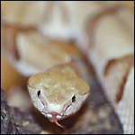

Sunday, January the 23rd, 2005
back to: title, date or indexes
Some say Blodgett conceived his fiendish X-ray plot as revenge against a world that laughed at him because he was a short man, but they are wrong. Blodgett was not of diminutive stature. He was actually somewhere between six and seven feet tall, although it is hard to be precise because he was resistant to tape measures. They would become knotted or twisted or indeed simply burst into inexplicable flames when Blodgett was near. At a snap of his fingers, similar devices, such as rulers or yardsticks, would crumble to sawdust, if they were wooden, or just dust, if made of some other substance. Remember that Blodgett was a frightening, frightening man.
He conceived his fiendish X-ray plot on a wild and windy Thursday just a week after Wilhelm Conrad Roentgen discovered X-rays accidentally while studying cathode rays in a high-voltage gaseous-discharge tube. Despite the fact that the tube was encased in a black cardboard box, Roentgen noticed that a barium platinocyanide screen, placed nearby by chance, emitted fluorescent light whenever the tube was in operation. Hearing the news on some sort of criminal grapevine, Blodgett immediately obtained a high-voltage gaseous-discharge tube and a barium platinocyanide screen. He sent his minions fanning out around town to steal a black cardboard box, and this led to his undoing.
A dishevelled plain clothes police officer, a protegé of Chief Inspector Cargpan, apprehended one of Blodgett's forty thieves trundling a stolen black cardboard box down a noisome alleyway in the small hours of the morning. The box was not empty. It contained a tangle of enraged and venomous vipers*. The game was up.
Sometimes, when writing about failed criminal enterprises, one is tempted to embroider the bare facts in the interests of entertainment. Here, I am content to let the facts speak for themselves. They may not speak eloquently, but they speak, and that is enough, one hundred and ten years after the foiling of Blodgett's fiendish X-ray plot.
*NOTE : Tautology. All vipers possess envenomed fangs, apparently.

A copperhead pit viper. Imagine lots of these in a stolen black cardboard box.
Hooting Yard on the Air, January the 26th, 2005 : “Five Tiny Birds” (starts around 10:07)
Hooting Yard on the Air, June the 29th, 2005 : “Shem, Ham, Japheth and Minnie Crunlop” (starts around 25:52)